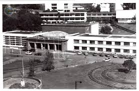
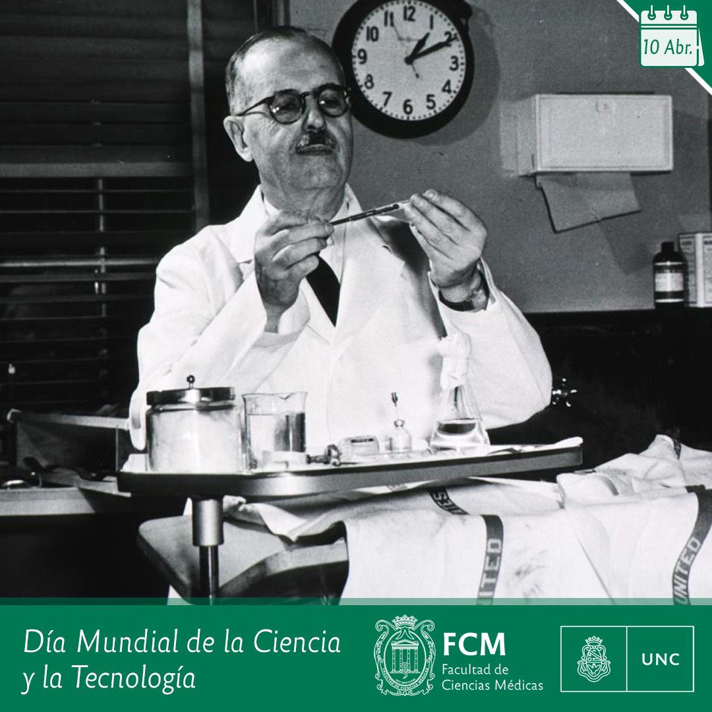
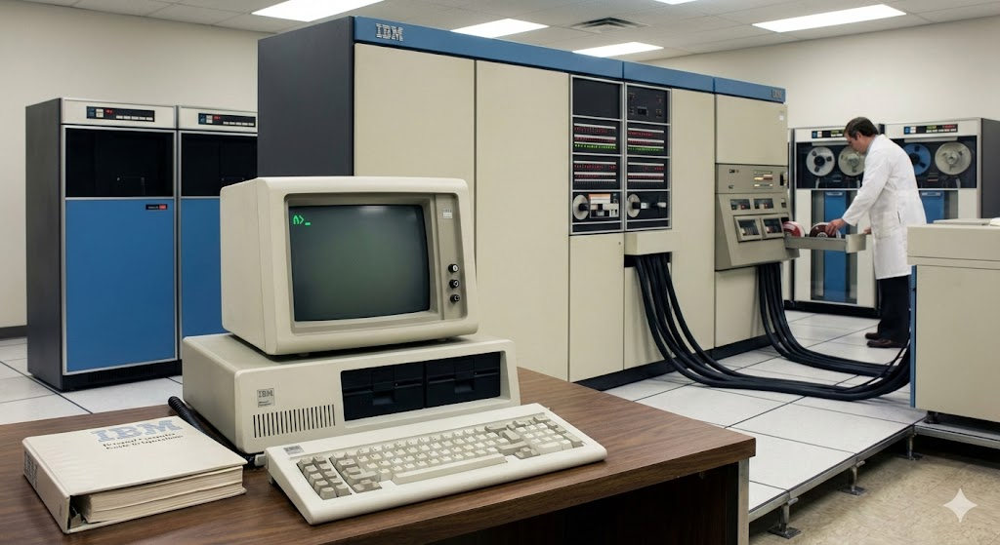
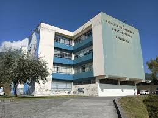
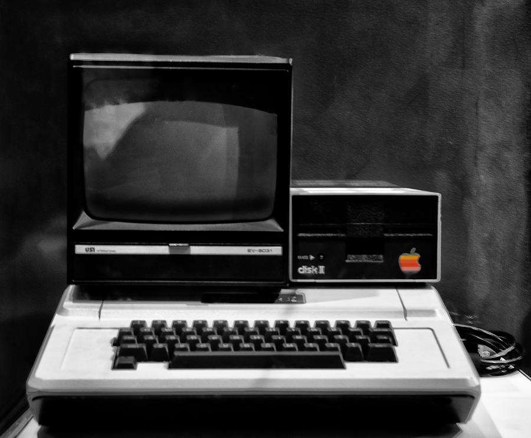
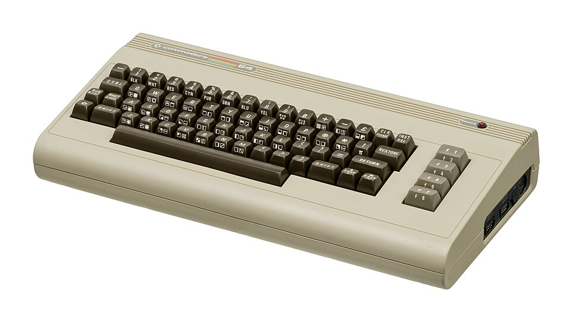
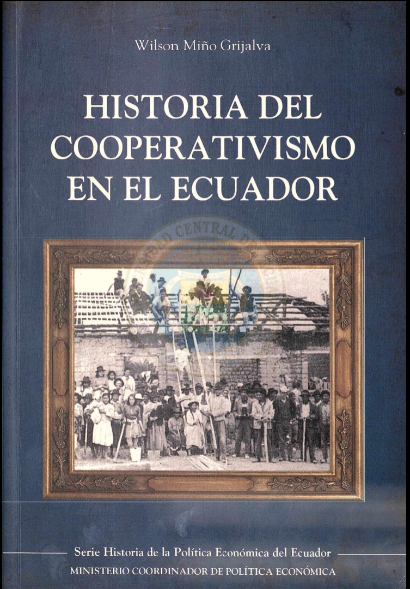
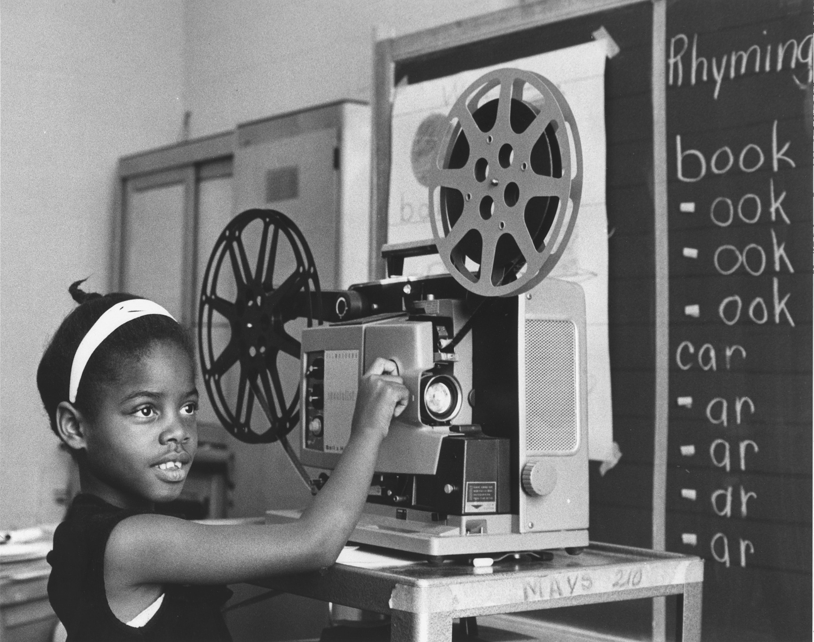

1980-1982: Contexto Nacional de Educación y Tecnología
Panorama de la Educación Superior en Ecuador a Inicios de la Década (1980)
Contexto histórico educativo: A inicios de la década de 1980, Ecuador contaba con un sistema de educación superior compuesto por aproximadamente 20 universidades, siendo la Universidad Central del Ecuador la institución más antigua y una de las más grandes del país. Fundada en 1826, la UCE mantenía una estructura organizacional tradicional con facultades establecidas décadas atrás, incluyendo la Facultad de Ingeniería, Ciencias Físicas y Matemáticas como una de sus unidades académicas fundacionales.
Durante este período, la educación superior en Ecuador enfrentaba desafíos significativos relacionados con la expansión de cobertura, modernización de infraestructura, actualización de planes de estudio, y limitaciones presupuestarias. El contexto político nacional, marcado por el retorno a la democracia en 1979 tras casi una década de gobierno militar, creaba expectativas de reforma y modernización en todos los sectores, incluyendo la educación superior.
Estructura típica de facultades universitarias (1980):
- Facultad de Ingeniería, Ciencias Físicas y Matemáticas: Una de las facultades tradicionales con carreras establecidas desde mediados del siglo XX
- Facultad de Medicina: Otra facultad fundacional con amplia tradición
- Facultad de Jurisprudencia: Entre las más antiguas de la universidad
- Facultad de Filosofía, Letras y Ciencias de la Educación: Tradicional en formación docente
- Facultad de Ciencias Económicas: Reflejo del desarrollo de disciplinas sociales
Dato Curioso
En septiembre de 1981, a la Escuela de Ciencias de la UCE se le encargó la tarea de preparar ingenieros informáticos, marcando así el inicio formal de la educación de esta disciplina dentro de la universidad.

1. Síntesis Histórica de la Facultad de Ingeniería - UCE
2. Universidad Central del Ecuador - El Telegrafo (Información histórica institucional).
Creación del CONACYT y Marco Legal para la Ciencia y Tecnología (1982)
Hito institucional documentado: El Consejo Nacional de Ciencia y Tecnología (CONACYT) fue creado mediante decreto ejecutivo en 1982 como organismo rector de las políticas científicas y tecnológicas del Ecuador. Esta creación respondía a una creciente conciencia internacional sobre la importancia estratégica de la ciencia y tecnología para el desarrollo nacional, así como a presiones internas de la comunidad académica y científica por contar con un marco institucional que coordinara y promoviera la investigación.
El CONACYT tenía entre sus objetivos principales la formulación de políticas nacionales de ciencia y tecnología, la promoción de la investigación científica, la coordinación entre instituciones académicas y productivas, y el fomento de la innovación tecnológica. Su establecimiento marcó un reconocimiento formal por parte del Estado ecuatoriano de la importancia de desarrollar capacidades científicas y tecnológicas propias, aunque su implementación efectiva enfrentaría numerosos desafíos en los años siguientes debido a limitaciones presupuestarias y la complejidad de coordinar múltiples actores institucionales.
Funciones principales establecidas para el CONACYT:
- Formulación de políticas: Desarrollo de estrategias nacionales para ciencia y tecnología
- Coordinación interinstitucional: Articulación entre universidades, centros de investigación, y sector productivo
- Fomento a la investigación: Establecimiento de programas de financiamiento para proyectos científicos
- Desarrollo de indicadores: Creación de sistemas de medición del avance científico y tecnológico nacional
- Cooperación internacional: Gestión de acuerdos y proyectos con organismos científicos internacionales
- Difusión científica: Promoción de la cultura científica en la sociedad ecuatoriana

Este documento legal establece formalmente la creación del Consejo Nacional de Ciencia y Tecnología y define sus funciones básicas dentro del aparato estatal ecuatoriano.
1983: Avances Tecnológicos y su Impacto en la Educación
La Revolución de la Computación Personal y su Llegada a Ecuador
Contexto tecnológico internacional verificable: La IBM 5150, lanzada originalmente en agosto de 1981, se había convertido para 1983 en el estándar dominante de la computación personal a nivel mundial. Este equipo marcó un punto de inflexión en la historia de la informática al establecer arquitecturas y estándares que perdurarían por décadas. Su diseño abierto permitió la creación de una industria de compatibles que democratizó gradualmente el acceso a la computación.
En el contexto ecuatoriano de 1983, equipos como la IBM 5150 comenzaban a aparecer en instituciones educativas y empresas pioneras, aunque su adquisición representaba una inversión significativa. La llegada de estas computadoras personales coincidió con un período de relativa apertura comercial en Ecuador, lo que facilitó su importación a pesar de las barreras arancelarias y los controles de cambio existentes. Para instituciones como la Universidad Central del Ecuador, la adquisición de estos equipos representaba tanto un desafío financiero como una oportunidad estratégica para modernizar procesos académicos y administrativos.
Especificaciones técnicas documentadas de la IBM 5150:
- Procesador: Intel 8088 funcionando a 4.77 MHz, arquitectura de 16 bits
- Memoria: Configuración base de 16 KB, expandible hasta 256 KB
- Almacenamiento: Disquetes de 5.25 pulgadas con capacidad de 160 KB, sin disco duro en modelos básicos
- Sistema operativo: PC DOS 1.0 desarrollado por Microsoft específicamente para esta plataforma
- Precio original en EE.UU.: USD 1,565 para el modelo básico sin monitor (aproximadamente USD 4,500 en valores actuales)
- Impacto educativo: Permitió introducción de computación en currículos universitarios de manera práctica

Archivos corporativos de IBM que documentan el desarrollo, especificaciones técnicas y contexto histórico del lanzamiento de la IBM 5150.
La Facultad de Ingeniería de la UCE: Tradición y Modernización
Tradición académica establecida: Para 1983, la Facultad de Ingeniería, Ciencias Físicas y Matemáticas de la Universidad Central del Ecuador tenía décadas de trayectoria formando profesionales en diversas disciplinas de ingeniería. Como una de las facultades fundacionales de la universidad, mantenía una estructura organizacional tradicional con departamentos especializados y carreras establecidas que reflejaban las necesidades de desarrollo del país y las tendencias internacionales en formación ingenieril.
La formación en la Facultad de Ingeniería durante este período combinaba fundamentos teóricos sólidos con aplicaciones prácticas limitadas por las restricciones tecnológicas y de infraestructura de la época. Los planes de estudio generalmente tenían duración de 5 a 6 años e incluían ciclos básicos de ciencias exactas, ciclos intermedios de formación disciplinaria, y ciclos finales de especialización y trabajo de titulación. La metodología de enseñanza tendía a ser tradicional, con énfasis en clases magistrales, laboratorios básicos, y trabajos prácticos que utilizaban tecnologías disponibles en el contexto nacional.
| Carrera de Ingeniería | Enfoque Principal | Duración Típica |
|---|---|---|
| Ingeniería Civil | Infraestructura, construcción, obras públicas | 5-6 años |
| Ingeniería Eléctrica | Sistemas de potencia, electrónica, automatización | 5-6 años |
| Ingeniería Mecánica | Diseño mecánico, termodinámica, procesos industriales | 5-6 años |
| Ingeniería Química | Procesos químicos, industria petroquímica, control | 5-6 años |
| Ingeniería en Sistemas | Emergiendo como especialización en informática | 5 años |

Referencia contextual: Documentación sobre la estructura académica tradicional y los planes de estudio vigentes en la Facultad de Ingeniería, Ciencias Físicas y Matemáticas durante el período 1980-1985, como se describe en el texto.
1984: Documentación Histórica y Desarrollo Institucional
Primeras Evidencias Documentales de Tecnología en Educación Superior
Registros históricos documentados: El año 1984 marca el período en el que comienzan a aparecer evidencias fotográficas y documentales más sistemáticas de equipos de computación en instituciones educativas ecuatorianas. Estas imágenes, conservadas en archivos institucionales y algunas colecciones privadas, muestran equipos generalmente ubicados en ambientes controlados como laboratorios especializados, con operadores capacitados y condiciones específicas de temperatura y seguridad.
La documentación visual de esta época revela no solo los equipos tecnológicos en sí, sino también las prácticas sociales y organizacionales asociadas a su uso. Las fotografías muestran salas especiales con protocolos de acceso restringido, la integración de estos equipos en estructuras administrativas y académicas tradicionales, y los primeros intentos de incorporar tecnología en procesos educativos. Esta documentación gráfica constituye un valioso registro del proceso gradual de modernización tecnológica del sistema educativo superior nacional.
Características comunes en laboratorios universitarios (1984):
- Equipamiento limitado: Pocas computadoras para muchos usuarios, generalmente compartidas
- Acceso restringido: Uso principalmente para investigación o administración, no para enseñanza general
- Personal especializado: Operadores técnicos que manejaban los equipos para usuarios finales
- Condiciones controladas: Salas con control de temperatura, polvo, y acceso eléctrico estable
- Aplicaciones específicas: Uso principalmente para cálculo científico, procesamiento de datos, o gestión administrativa
- Integración incipiente: Primeros intentos de incorporar tecnología en currículos específicos

Colección de imágenes históricas de equipos de computación que representan tecnologías disponibles en el mercado internacional durante los años 80.
Desarrollo Curricular y Formación Profesional en Ingeniería
Durante 1984, las facultades de ingeniería en Ecuador, incluyendo la de la Universidad Central, continuaban desarrollando y ajustando sus currículos para balancear tradición académica con las demandas emergentes de un país en proceso de desarrollo. Los planes de estudio generalmente seguían modelos internacionales adaptados al contexto nacional, con énfasis en fundamentos teóricos sólidos y aplicaciones prácticas relevantes para las condiciones y necesidades locales.
El proceso de formación profesional en ingeniería durante este período típicamente incluía varias etapas: un ciclo básico de ciencias exactas (matemáticas, física, química), un ciclo intermedio de formación disciplinaria específica, un ciclo de especialización o profundización, y un trabajo final de titulación que podía tomar diversas formas (proyecto de grado, tesis, examen complexivo). La metodología de enseñanza tendía a ser presencial y tradicional, con limitado uso de tecnología educativa avanzada debido a restricciones de infraestructura y recursos.
Títulos profesionales y ejercicio: Los graduados de la Facultad de Ingeniería de la UCE recibían títulos que les permitían ejercer profesionalmente en Ecuador tras cumplir con los requisitos establecidos por el Consejo de Educación Superior y los colegios profesionales correspondientes. El título típico seguía la estructura "[Nombre] es Ingeniero [Especialidad]" y representaba no solo la culminación de estudios universitarios sino también la habilitación para práctica profesional en el ámbito nacional.
UNIVERSIDAD CENTRAL DEL ECUADOR
FACULTAD DE INGENIERÍA, CIENCIAS FÍSICAS Y MATEMÁTICAS
CARRERA DE INGENIERÍA [ESPECIALIDAD]
CONFIERE EL TÍTULO DE
INGENIERO [ESPECIALIDAD]
A:
[NOMBRE COMPLETO DEL GRADUADO]
Quito, [FECHA DE GRADUACIÓN]
Registro Oficial No. [NÚMERO]
(Representación del formato típico de título de ingeniería en Ecuador durante los años 80)
1985: Consolidación y Nuevas Perspectivas
Diversificación Tecnológica y su Impacto en la Educación Superior
Expansión del mercado tecnológico internacional: Para 1985, el mercado internacional de computación personal mostraba una significativa diversificación, con opciones que iban desde los equipos compatibles con IBM hasta sistemas alternativos como el Apple Macintosh (lanzado en 1984) y las populares Commodore 64. Esta diversificación comenzaba a reflejarse tímidamente en el mercado ecuatoriano, aunque las importaciones seguían estando limitadas por factores económicos, barreras arancelarias, y controles de cambio.
En el ámbito educativo superior, este período de diversificación tecnológica coincidió con discusiones más sistemáticas sobre la incorporación de la informática en los currículos académicos. Algunas facultades, particularmente en ingeniería y ciencias, comenzaban a considerar seriamente la creación de cursos introductorios de computación o la integración de herramientas computacionales en asignaturas existentes. Sin embargo, la implementación efectiva de estos programas enfrentaría varios años de retraso debido a limitaciones de equipamiento, capacitación docente, definición de contenidos apropiados, y restricciones presupuestarias institucionales.
Plataformas tecnológicas disponibles internacionalmente (1985):
- IBM PC y compatibles: Estándar empresarial y educativo en expansión
- Apple Macintosh: Innovadora interfaz gráfica, popular en diseño y artes
- Commodore 64: Opción económica popular en educación básica y hogares
- Apple II: Aún ampliamente utilizado en educación por su ecosistema de software educativo
- Computadoras de 8 bits: Spectrum, MSX, y otras opciones más económicas
- Estaciones de trabajo UNIX: Para investigación avanzada en instituciones con mayores recursos

Cronología detallada de los principales desarrollos tecnológicos a nivel mundial durante 1985, proporcionando contexto internacional para entender influencias en el desarrollo tecnológico ecuatoriano.
Formación de Ingenieros y su Rol en el Desarrollo Nacional
Los ingenieros graduados de la Universidad Central del Ecuador a mediados de los años 80 enfrentaban un contexto nacional caracterizado por necesidades significativas de desarrollo de infraestructura, industrialización limitada, y desafíos tecnológicos crecientes. Su formación, aunque tradicional en métodos y contenidos, proporcionaba bases sólidas para contribuir a proyectos de construcción, desarrollo industrial, planificación urbana, y otros ámbitos relevantes para el desarrollo nacional.
El perfil profesional del ingeniero ecuatoriano de esta época combinaba conocimientos técnicos específicos con adaptabilidad a condiciones locales de recursos limitados, tecnologías disponibles, y regulaciones nacionales. Muchos graduados se incorporaban al sector público (ministerios, municipios, empresas estatales), mientras que otros se integraban al sector privado (empresas constructoras, consultorías, industria) o desarrollaban emprendimientos propios. Un número menor continuaba estudios de posgrado, generalmente en el extranjero debido a limitadas opciones nacionales.
Legado educativo de la Facultad de Ingeniería UCE: Para 1985, la Facultad de Ingeniería de la Universidad Central del Ecuador había graduado a miles de profesionales que habían contribuido significativamente al desarrollo nacional en áreas como infraestructura vial, obras hidráulicas, edificaciones, sistemas eléctricos, y procesos industriales. Esta trayectoria de contribución al desarrollo nacional constituía un legado importante que influenciaba tanto la identidad institucional como las expectativas sobre el rol de los ingenieros en la sociedad ecuatoriana.

Contexto profesional: Evidencia del aporte técnico de graduados de la UCE en proyectos clave de infraestructura nacional y desarrollo industrial descritos en los planes de desarrollo de la época.
Balance Histórico: 1980-1985 en Educación y Tecnología
Logros y Avances en el Desarrollo Educativo y Tecnológico
El período 1980-1985 representó una fase de transición significativa en la educación superior y el desarrollo tecnológico en Ecuador. A pesar de limitaciones estructurales y restricciones económicas, se lograron avances importantes que sentarían bases para desarrollos posteriores:
- Institucionalización de políticas científicas: Creación del CONACYT como marco para coordinar ciencia y tecnología a nivel nacional
- Primeros pasos en computación universitaria: Introducción gradual de equipos de computación en instituciones de educación superior
- Modernización curricular incipiente: Inicio de discusiones sobre incorporación de informática en planes de estudio
- Desarrollo de infraestructura básica: Establecimiento de primeros laboratorios de computación universitarios
- Formación de capacidades iniciales: Desarrollo de primeros grupos de profesionales con conocimientos básicos de computación
- Integración en tendencias globales: Reconocimiento creciente de la importancia de la tecnología para el desarrollo educativo y nacional
- Preservación documental inicial: Primeras evidencias fotográficas y documentales de tecnología en educación superior
- Adaptación institucional: Primeros ajustes organizacionales para gestionar tecnología emergente
Logro fundamental del período: El logro más significativo de 1980-1985 fue probablemente el cambio de mentalidad sobre el rol de la tecnología en la educación superior - desde verla como herramienta especializada para aplicaciones específicas hacia reconocer su potencial transformador para procesos educativos, de investigación, y administrativos.

Desafíos Persistentes y Limitaciones Estructurales Identificadas
A pesar del progreso incipiente, el período 1980-1985 también reveló desafíos estructurales significativos que limitarían el desarrollo tecnológico educativo en años posteriores:
- Restricciones económicas crónicas: Limitaciones presupuestarias institucionales para inversión en tecnología
- Dependencia de importaciones: Alta dependencia de equipos y tecnologías desarrolladas internacionalmente
- Escasez de capacidades humanas: Falta de personal capacitado en tecnologías emergentes
- Infraestructura limitada: Restricciones en energía eléctrica estable, conectividad, y espacios adecuados
- Planificación a corto plazo: Dificultad para desarrollar estrategias tecnológicas de mediano y largo plazo
- Integración curricular limitada: Dificultad para incorporar tecnología de manera significativa en planes de estudio
- Desigualdad en acceso: Diferencias significativas entre instituciones en capacidad de inversión tecnológica
- Falta de políticas integradas: Ausencia de estrategias nacionales coherentes para tecnología educativa
- Resistencia al cambio: Tradicionalismo en métodos pedagógicos y organizacionales
- Obsolescencia acelerada: Dificultad para mantener equipos actualizados en contexto de cambios tecnológicos rápidos
La experiencia de 1980-1985 demostró que el desarrollo tecnológico en educación superior no era simplemente una cuestión de adquirir equipos, sino que requería cambios más profundos en capacidades institucionales, modelos de gestión, formación de recursos humanos, y marcos de política. Esta lección, aunque aprendida de manera incipiente en este período, establecería patrones de desafío que persistirían en décadas posteriores.
Próxima fase: 1986-1989
Expansión de redes locales, diversificación tecnológica, y desarrollo de primeros sistemas institucionales en el contexto de reformas educativas y políticas nacionales de ciencia y tecnología.
Continuar a 1986-1989